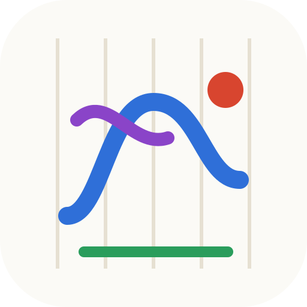

Doodle turns drawings into music. Every stroke snaps to a scale, every color is an instrument, pen pressure is volume. No notes to learn, no wrong notes to play.
One axis is time, the other is pitch. Lines snap to the notes of the key you picked, so everything sounds right.
Pick any color from a full picker. Its hue chooses the instrument: piano, pluck, pad, marimba, lead or bell.
Pen pressure, smooth strokes, brush and eraser sizes, selection, undo, zoom and pan, palm rejection for tablets.
Keep bass and melody on separate layers. Chain patterns into verse and chorus and let the editor follow the music.
Pick a mood from calm to cyberpunk and the scale, tempo, swing and instrument are set for you.
Install it to your home screen. Drawings stay on your device, the app runs without a network.
Save your piece as WAV audio, a MIDI file for your DAW, or a PNG picture. No watermark, no paywall.
Thirty presets, from a lullaby to the avant-garde. One tap and you are in the right key.
Calm, blues, pixel game or baroque. It sets the key, scale and tempo.
Waves, dots, zigzags. Press harder for louder, change color for a new instrument.
Hit play, stack patterns into a song, export WAV or MIDI, or send a link.
Yes. No ads, no subscription, no locked features. The code is open under the MIT license.
No. Pick a mood and draw. The notes always come from the chosen scale, so nothing sounds off.
Any modern browser: phone, tablet with a pen, laptop. Install it from the browser menu to use it like an app.
Only on your device. Nothing is uploaded unless you share a link yourself.